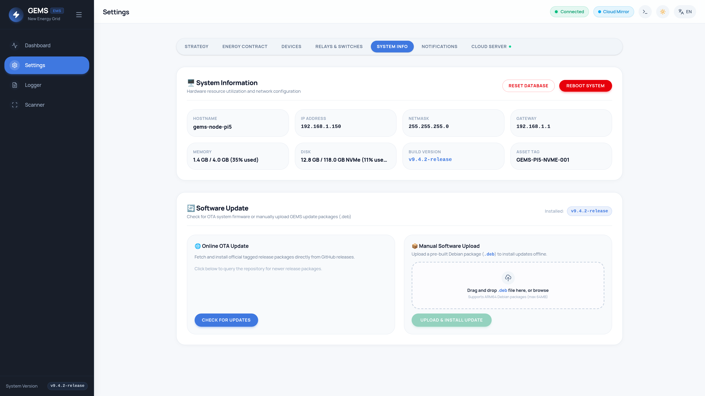

Installation & Hardware Setup Manual
Comprehensive deployment instructions for GEMS on Raspberry Pi ARM64 hardware, covering pre-built OS images, Debian package management, source builds, and physical communication wiring.
Need a complete printable PDF for the electrical cabinet or field handover? Download the official GEMS Installer & Commissioning Manual (PDF) with full-color wiring diagrams, step-by-step device onboarding, and commissioning checklist.
Official Tested Reference Hardware
GEMS is optimized and validated against the following official reference hardware suite:
| Component | Product & Model | Specifications | Purchase Reference |
|---|---|---|---|
| Complete System Kit | db-tronic Raspberry Pi 5 4GB NVMe Kit |
• Raspberry Pi 5 (4GB RAM, Quad-Core Cortex-A76 @ 2.4GHz) • Official Raspberry Pi 27W USB-C PD Power Supply • Custom Aluminum Metal Enclosure with Active Cooler • M.2 NVMe PCIe HAT / Base & 16-pin FPC ribbon cable • 64GB MicroSD Card + 4K Micro-HDMI cable |
Amazon BE Link → |
| High-Speed NVMe Storage | Patriot P300 128GB M.2 NVMe SSDP300P128GM28 |
• M.2 2280 PCIe Gen 3.0 x4 (NVMe 1.3) • Read up to 1,600 MB/s / Write up to 600 MB/s • Ultra-low power consumption for 24/7 reliability • High endurance, zero SD card wear |
Amazon BE Link → |
⚡ NVMe M.2 SSD Installation & EEPROM Bootloader Setup
When setting up a Raspberry Pi 5 with an NVMe Base (such as the db-tronic kit) and the Patriot P300 128GB SSD, the Pi 5 will not boot or see the SSD out of the box because factory EEPROMs are programmed to boot exclusively from MicroSD (BOOT_ORDER=0xf41) and do not probe the PCIe bus at early boot.
1. EEPROM Boot Order: Factory Pi 5 bootloader ignores NVMe storage unless NVMe boot mode (0x6) and PCIE_PROBE=1 are activated in EEPROM.
2. PCIe Device Tree Overlay: Linux kernel requires dtparam=pciex1 in /boot/firmware/config.txt.
3. Ribbon Cable Alignment: The 16-pin FPC cable must have gold pins facing inward towards Ethernet/USB ports on the Pi 5.
Method 1: The 3-Minute Quick Fix (Using Raspberry Pi Imager EEPROM Utility)
- Insert the included 64GB MicroSD card into your PC/Mac.
- Open Raspberry Pi Imager → Choose Device: Raspberry Pi 5.
- Click Choose OS → Misc utility images → Bootloader → NVMe/PCIe Boot.
- Choose your MicroSD card and click Write.
- Insert the card into the Raspberry Pi 5 (with Patriot P300 SSD assembled in the HAT) and plug in the official 27W Power Supply.
- In 5–10 seconds, the green ACT LED flashes rapidly and the HDMI screen turns solid green, confirming the EEPROM is permanently updated (
BOOT_ORDER=0xf461,PCIE_PROBE=1). - Unplug power, remove the MicroSD card, flash
gems-os-image.img.xzdirectly to the Patriot P300 SSD, and power on. The system will boot from NVMe in under 8 seconds!
Method 2: Flash NVMe Directly via Cockpit Web Terminal
If you don't have a separate USB-to-NVMe enclosure for your PC, you can configure the bootloader and flash the Patriot P300 SSD directly using Cockpit terminal (http://ems.local:9090) while booted from the MicroSD card:
# 1. Update EEPROM to probe PCIe and boot from NVMe
sudo rpi-eeprom-config --edit
# Ensure BOOT_ORDER=0xf461 and PCIE_PROBE=1 are set, save and exit (Ctrl+O, Ctrl+X)
# 2. Download and flash GEMS directly to the Patriot P300 SSD (/dev/nvme0n1)
curl -LO https://github.com/webdotpulse/GRID-EMS-RELEASE/releases/latest/download/gems-os-image.img.xz
xzcat gems-os-image.img.xz | sudo dd of=/dev/nvme0n1 bs=4M status=progress conv=fsync
# 3. Power off, remove the MicroSD card, and boot!
sudo poweroffOption A: Custom Raspberry Pi OS Image (Recommended)
The fastest and most reliable way to deploy GEMS is using the official pre-built Raspberry Pi OS Lite (Bookworm ARM64) image.
- Optimized Kernel & Filesystem: SQLite WAL mode tuning, memory-backed scratch partitions, minimal SD card wear.
- Nginx Reverse Proxy: Automatically listens on Port 80, proxying WebSocket/SSE traffic cleanly to GEMS on port 8080.
- Wayfire Kiosk Desktop: Ultra-lightweight Wayland compositor autostarting Chromium in full-screen kiosk mode at
http://ems.local. - Cockpit Web Console: Full root terminal and hardware monitoring pre-installed on port
9090(User:admin, Pass:manufacturer). - Raspberry Pi Connect: Pre-configured for unattended remote screen sharing with automatic connection acceptance.
Flashing Instructions
-
Download the latest release archive
gems-os-image.img.xzfrom the GitHub Releases Page. - Insert a fast MicroSD card (Class 10 / U3, minimum 8GB) into your computer.
- Open BalenaEtcher or Raspberry Pi Imager.
-
Select the downloaded
.img.xzfile directly (no need to decompress), choose your target SD card drive, and click Flash!. - Once writing and verification complete, insert the card into your Raspberry Pi and connect power.
# Access via mDNS in your local browser:
http://ems.local
# Or directly via hostname:
http://ems
# Embedded Cockpit Web Terminal:
http://ems.local:9090
Username: admin
Password: manufacturerOption B: Debian Package (.deb) Installation
If you already have a running Raspberry Pi OS or Debian/Ubuntu ARM64 installation, you can install the standalone package.
1. Download and Install the Package
# Download latest ARM64 Debian package
curl -LO https://github.com/webdotpulse/GRID-EMS-RELEASE/releases/latest/download/gems_latest_arm64.deb
# Install package
sudo dpkg -i gems_latest_arm64.deb
# Resolve any missing runtime dependencies
sudo apt-get install -f -y2. Systemd Service Management
The Debian package creates a dedicated system user gems, installs binaries and assets to /opt/gems, and registers the gems.service systemd daemon:
| Operation | Terminal Command | Description |
|---|---|---|
| Check Status | sudo systemctl status gems.service |
Verifies active runtime status and memory footprint. |
| Restart Service | sudo systemctl restart gems.service |
Gracefully restarts the backend server and reloads SQLite cache. |
| Stop Service | sudo systemctl stop gems.service |
Flushes all in-memory measurement buffers to SQLite before halting. |
| View Live Logs | sudo journalctl -u gems.service -f -n 100 |
Streams real-time stdout/stderr engine logs from systemd journal. |
Building from Source
To compile GEMS directly from source code:
Prerequisites
- Go 1.24+: Required for compiling the backend micro-kernel engine.
- Node.js 22+ & npm: Required for building the Vue 3 TypeScript Single Page Application.
- C Cross-Compiler (if compiling from x86_64 host for ARM64):
gcc-aarch64-linux-gnuandlibc6-dev-arm64-cross(required for CGO SQLite bindings inmattn/go-sqlite3).
# 1. Clone the repository
git clone https://github.com/webdotpulse/GRID-EMS.git
cd GRID-EMS
# 2. Run the automated local build script
./build.sh
# The script compiles the Vue 3 frontend to backend/dist/
# and generates the statically linked ARM64 binary:
# Output artifact: build/gems-release-arm64.tar.gzCockpit Web Terminal & System Administration
Cockpit provides an intuitive, browser-based Linux administration dashboard on port 9090.
Default credentials for Cockpit are User: admin and Password: manufacturer. We strongly recommend changing the admin password via Cockpit → Accounts or through terminal command sudo passwd admin upon initial installation.
With Cockpit, you can:
- Access a full root-capable bash terminal directly in your web browser without requiring an SSH client.
- Monitor real-time CPU, RAM, and network throughput graphs.
- Inspect and restart systemd units (
gems.service,nginx.service,wayfire.service). - View full kernel
dmesglogs and systemd journal logs.
Raspberry Pi Connect (Remote Screen Sharing)
Raspberry Pi Connect enables encrypted remote access to the GEMS kiosk interface from any external browser without setting up port forwarding or VPNs.
- Open the Cockpit Web Terminal at
http://ems.local:9090. - Run the following command to verify services and initiate pairing:
Terminal
loginctl enable-linger gems rpi-connect signin - Click or copy the authentication URL displayed in the terminal output to link the device to your Raspberry Pi ID.
- Visit connect.raspberrypi.com from any remote browser, select
ems, and click Screen Sharing. Connection is automatically accepted by the kiosk environment.
Verifying Installation & System Health
Once booted, access the web UI at http://ems.local (or the Raspberry Pi IP address) and navigate to Settings → System Info to verify system hardware health, release build number, and NVMe disk wear statistics:

Hardware Wiring: RS485 & Modbus Physical Setup
When connecting physical solar inverters, smart meters, or EV chargers via Modbus RTU (serial), correct RS485 wiring is essential for reliable communication.
| Signal | Typical Wire Color | Description & Polarity |
|---|---|---|
| A (D+ / TxD+ / RxD+) | White / Blue Stripe | Non-inverting differential data line (+). |
| B (D- / TxD- / RxD-) | Blue Solid | Inverting differential data line (-). |
| GND (COM) | Brown / Ground wire | Common signal reference ground. Prevents common-mode voltage drift. |
| Shield | Bare Braided Wire | Connect to Earth Ground at ONE single point only (at the Raspberry Pi USB adapter side). |
For RS485 bus runs exceeding 10 meters, ensure a 120Ω 0.25W resistor is placed across the A and B terminals at the extreme ends of the daisy-chain (the USB adapter and the last slave device). Do not use star or tree wiring topologies.
P1 DSMR Smart Meter RJ12 Pinout
Digital smart meters in Belgium (Fluvius/Sibelga) and the Netherlands utilize an RJ12 (6P6C) P1 port to output serial DSMR telegrams:
| RJ12 Pin | Signal Name | Direction | Function |
|---|---|---|---|
| Pin 1 | +5V Power | Out from Meter | Powers the optical isolation probe or USB converter (DSMR 5.0+ provides up to 250mA). |
| Pin 2 | Data Request (RTS) | In to Meter | Set HIGH (+5V) to request telegram output from the smart meter. |
| Pin 3 | Data GND | - | Ground reference for data signals. |
| Pin 4 | NC | - | Not connected. |
| Pin 5 | Data Out (RxD) | Out from Meter | Serial inverted ASCII telegram stream (115200 baud, 8N1 on DSMR 5.0; 9600 baud, 7E1 on DSMR 2/3). |
| Pin 6 | Power GND | - | Power ground reference. |
In Belgium (Fluvius), the P1 user port is disabled by default for privacy reasons. You must log into the Mijn Fluvius Portal and toggle "Activeren van gebruikerspoorten P1 en S1" before the meter will transmit telegrams.